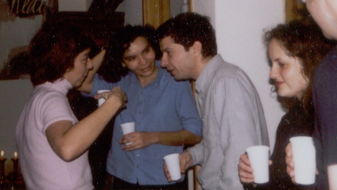
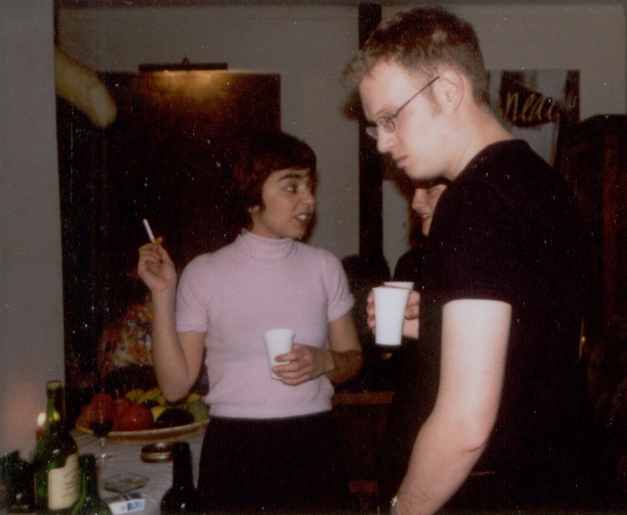

WHAT WE WERE THINKING

Portugal, not the Algarve | What We Were Thinking | tomato salad
New Year's Eve 2001

Liliana: New Year's is always tricky, a self-conscious balance and resolution that resolves nothing, a sudden valuation of all we have been. We drank some really good wine on an empty stomach right before the party and were chatting about San Francisco. Patricia brought us to this party and I was glad she did, Sim, Lyds and I would've probably stayed home drinking, talking about political ecology or something like that.
Lydia: We better start dancing soon. I don't think there are any single men in this party, but no matter. Sim's looking glum, I think it's all those omelettes. Oh this is definitely better than last year when I had to clean the house after the bash and Sim was wearing blue glitter on his face. Just not having to clean and appease drunks is enough.

Sim: There is never any vegetarian food, I'm living on olives and sourdough! Dead pig, dead cow, dead fish... and am sick of ordering omelettes. Next holiday we're going to southern India.
Patricia: I hope the guests don't get so smashed they embarrass me. All these people are my Mum's students and I couldn't face her again. Or I could, but still they would tease me forever about the gringos. And they keep talking about Colombia day in, day out. I wonder if they like Portugal at all...
Back to Portugal